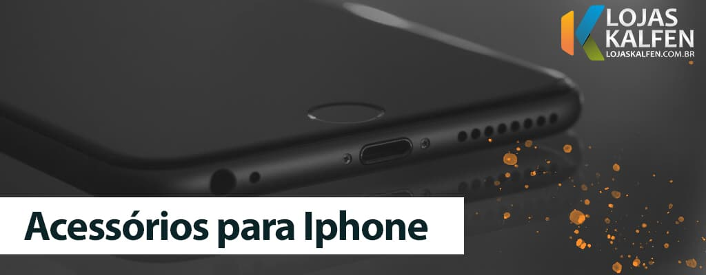

Top 5 Melhores acessórios para Iphone em 2022
3 de Agosto, 2024
5 Melhores fones de ouvido bluetooth 2024
3 de Agosto, 2024

Carregador para iPhone: Qual a melhor opção?
3 de Agosto, 2024

Top 9 Melhores acessórios para Iphone 2022
3 de Agosto, 2024

Teclado mecânico branco – Top 3 Modelos que você precisa conhecer
6 de Agosto, 2024
5 Melhores fones de ouvido bluetooth 2022
3 de Agosto, 2024

Fone in ear, over ear e on ear: saiba a diferença entre cada um deles!
3 de Agosto, 2024
Teclado RGB : O que é? Como escolher o melhor
3 de Agosto, 2024
Pesquise